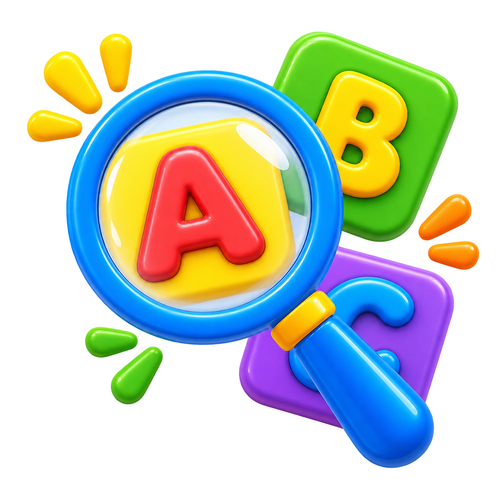
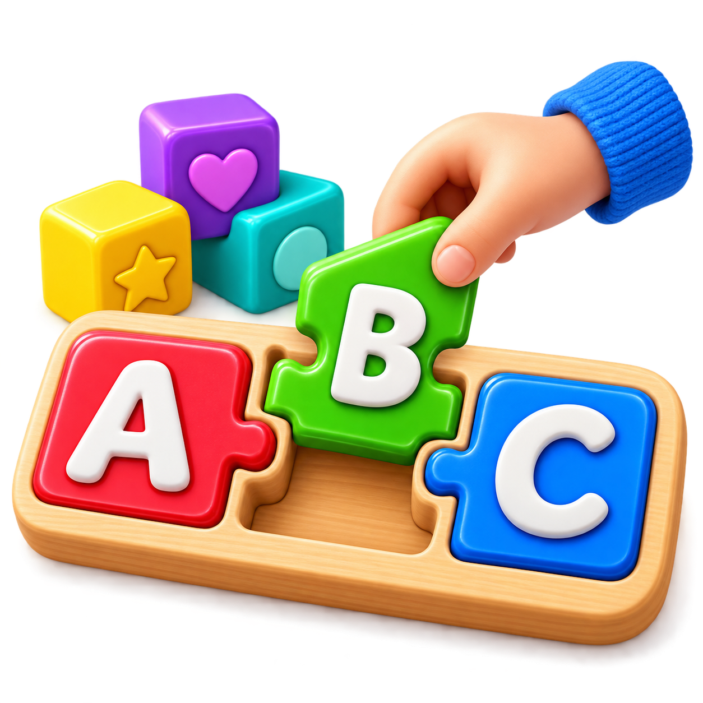
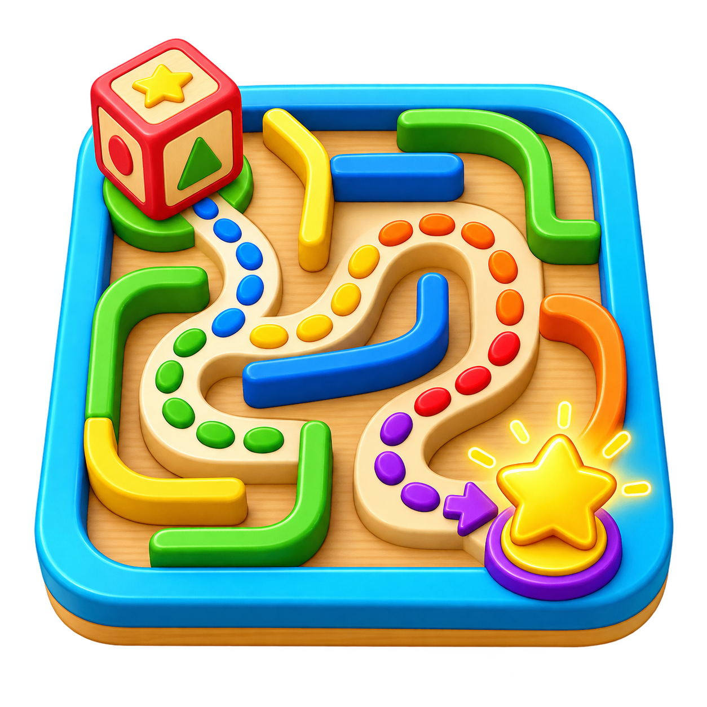
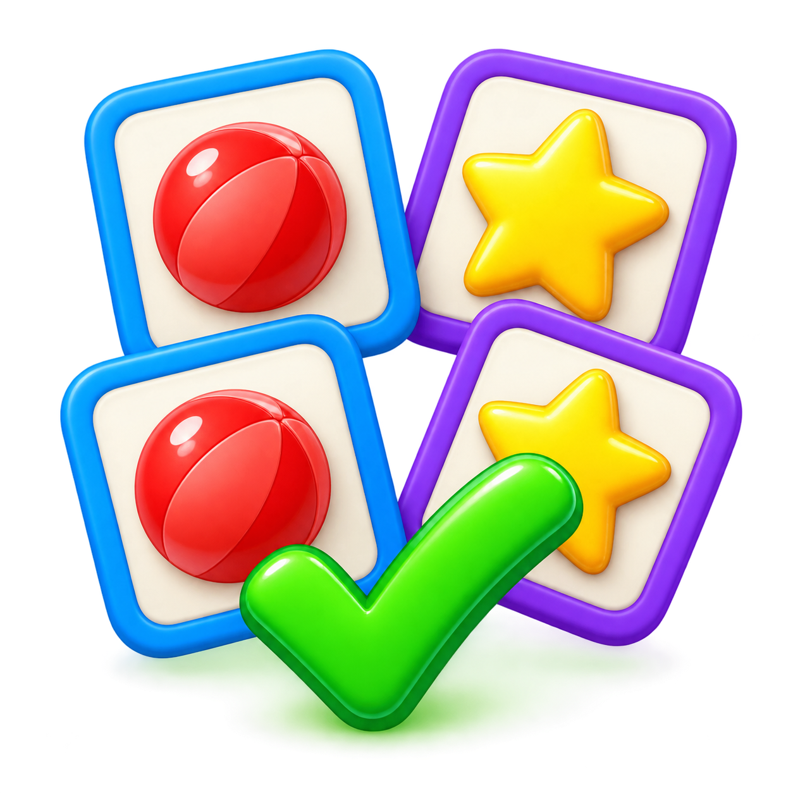
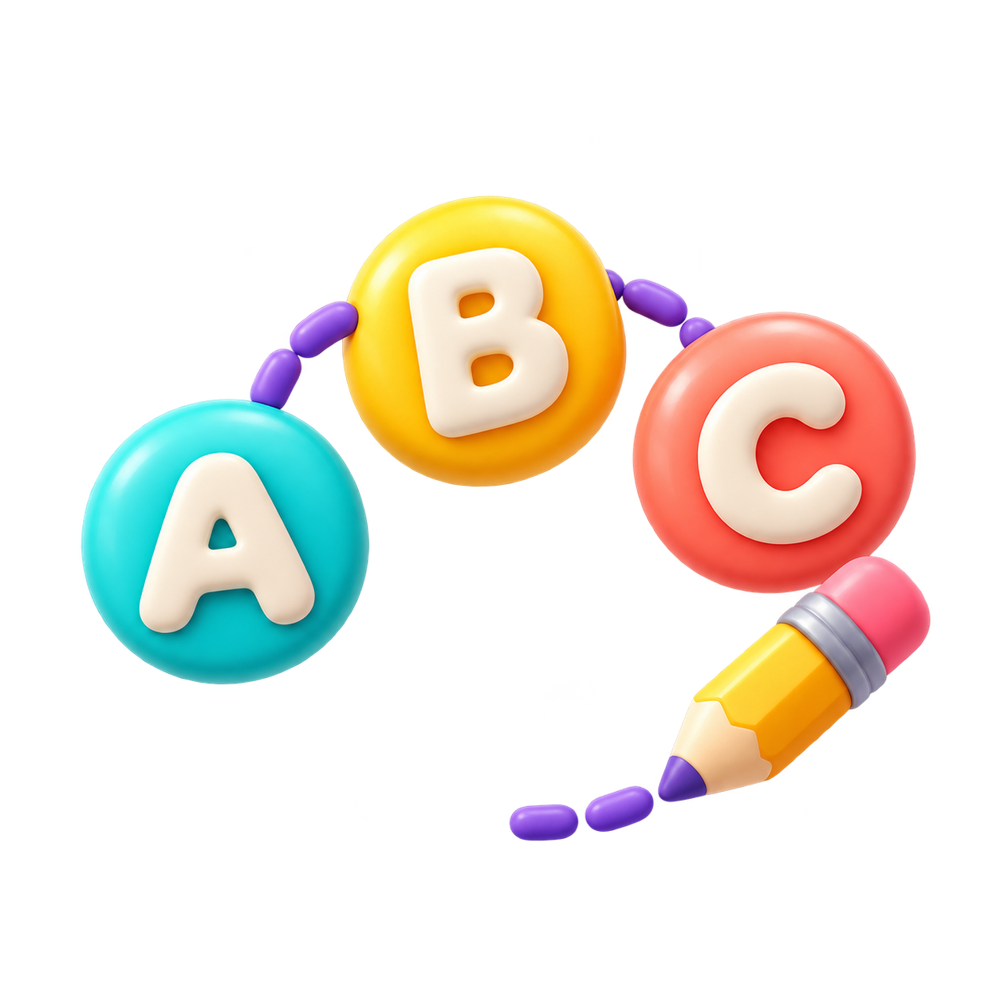

🏠
Main Home
📅
Week Home
←
Back
Phonics
Week 1 — ug

Find the Word
Find the matching words!

Build the Word
Tap the letters to build each word!

Letter Maze
Follow the sound path!

Picture Match
Read the sentence and choose its picture!
Falling Letters
Catch the sounds and build the word!
Sound Basket
Sort words into their sound families!
Echo Rhythm
Listen and repeat the short rhythm!
Sounds in the Park

ABC Connect
Join A to H to discover a bee.
Little Earth Helpers
ABC Connect
Join A to H and discover a leaf.
Bee Meadow Adventures
ABC Connect
Join A to L to reveal a butterfly.
Honey Kitchen Adventures
ABC Connect
Join A to L to reveal a honey cupcake.
 Phonics
Phonics